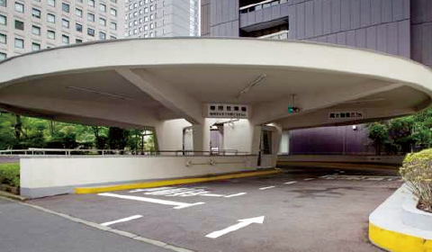
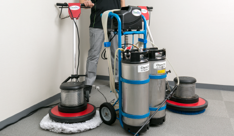

お客様のニーズと期待に応える多様なサポートをワンストップで。
建物の長寿命化や資産価値の維持･向上を図るために、また、建物管理の効率化やコスト低減を目指して、当社は、お客様に向けて、多彩なサポートサービスを提案･提供しています。建物管理の現場に精通し、建物設備管理、清掃管理から工事、省エネや災害対策に至るまで、すべてをワンストップで提供できる当社だから可能な時宣を得た適切なサポートがより確かな成果、高い投資効果につながり、お客様に大きな満足をお約束します。
- 営繕予防保全提案
- 建物の資産価値の維持･向上を図るためには、建物設備の経年劣化に対応して適時･適切な営繕を行う必要があります。そのために日常点検や定期点検の結果等に基づいた営繕計画を策案し、お客様にご提案します。また、近い将来の劣化を予測し、早めに措置を講じる予防保全にも努めます。当社では計画の提案から工事の実施まで、き め細かくサポートします。
- 省エネルギー提案
- 大規模建物等の設置者は、第一種･第二種エネルギー特定事業者として、省エネ法に基づくエネルギー使用量削減へ向けた「中長期計画書」や「定期報告書」の提出が求められます。当社は、長年の建物管理で培った経験を基に、省エネ法や東京都環境確保条例などに対応した省エネルギー策の提案や推進をサポート。中心規模な建物においても、従来から培ってきたエネルギー効率化の技術を活かし、幅広い省エネルギー策をご提案します。
- 災害対応
- 火災や地震などの災害や突発的な事故に備えて、当社では標準対応マニュアルをご用意しています。また、これを基に各建物用にアレンジした「緊急対応マニュアル」も作成します。各建物を担当する設備員は、定期的に災害対応訓練を行うことにより、不測の場合の建物設備の被害を最小限に抑えることを目指します。近年問題となっているテロ等の対応についても、最新の情報を基に、各建物に合った対応策をお客様と共に検討します。
- 管理サービス業務
- 
- 当社は、駐車場管理、受付案内、メール宅配、物流管理等、建物管理に付随する様々なサポート業務を行います。施設に付帯した駐車場の管理運営にも豊かな経験とノウハウを有しており、建物内駐車場の空車パレットを時間貸しするなど、収益向上につながる提案も行います。
- 建物運営・管理のお客様代行業務
- お客様に代わって建物運営･管理に係るテナント窓口業務、テナント誘致･交渉等のリージング業務、設備保守監督業務、修繕計画立案及び修繕工事監督業務、請求･支払･入金管理等の出納業務、定期的なレポーティング業務等を行い、建物のキャッシュフローの最大化と資産価値の向上に取り組みます。これらプロパティマネジメント業務と「建物設備管理」「清掃管理」「工事」「警備」等ビルマネジメント業務を併せて行うことで、建物 に関する一括したサービスをご提供します。
- 定期清掃･特別清掃提案
- 
- 定期清掃は、カーペットのクリーニングや石床の洗浄、樹脂タイルのワックス塗布等、日常清掃で対応しきれない部分の清掃を定期的に行うものです。特別清掃は、オフィスなど専用部の椅子、ブラインド、照明の清掃など、お客様のご要望にきめ細かくお応えします。特別に組織された清掃チームも活躍。最新の大型洗浄器を使った「SCAT(Special Cleaning Advanced Team)」。高い技術を持つ熟練のクルーで構成された「QMT(Quality ManagementTeam)」。いずれも高い清掃品質で応えます。
- 清掃工数管理
- 清掃工数管理は、いわば現場の清掃作業の見える化、数値化。清掃作業や工程の最適化を図り、明確なデータに基づく透明性の高いコストオペレーションを実現します。当社が約半世紀にわたり蓄積したノウハウとデータに基づき、独自開発した清掃工数計算と見積作成システム「KEPPS(Kakuuno Estimation&Personalized PlanningSystem)」も活用。最も効率的な清掃サービスを適正な価格でご提案します。
お問い合わせはこちら